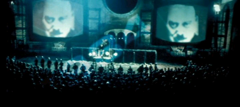

How is technology used to manipulate a population?
“Inside the flat a fruity voice was reading out a list of figures which had something to do with the production of pig-iron. The voice came from an oblong metal plaque like a dulled mirror which formed part of the surface of the right-hand wall. Winston turned a switch and the voice sank somewhat, though the words were still distinguishable. The instrument (the telescreen, it was called) could be dimmed, but there was no way of shutting it off completely.”
“The alteration of the past is necessary for two reasons, one of which is subsidiary and, so to speak, precautionary. The subsidiary reason is that the Party member, like the proletarian, tolerates present-day conditions partly because he has no standards of comparison … But by far the more important reason for the readjustment of the past is the need to safeguard the infallibility of the Party.”
In “1984”, technology is used to control a population’s freedom of expression and individuality. 80% of the Oceania’s population are proles, who are deemed basic, thoughtless, and unable to spark a revolution. The outer party members which comprise around 15% of Oceania’s population are being scrutinized for any little unorthodoxy. Specifically, the party delegates telescreens to watch and hear party members at home, and little microphones outside to track any nonconformist speech. Technology is not only used to winnow the few rebels amongst the absent minded, but to alter the past. Memory holes suck historical records and burn them completely, after they have been altered by Speakwrites. The goal of altering history is so that no modern citizen has any standard of comparison in the past, and thus are content with their present state, and also, more importantly, to safeguard the infallibility of the party. Winston, the main character of 1984 has a job in the Ministry of Truth where he changes past files.
Finally, an interesting method of controlling the population with technology is by directing technological innovation towards useless projects. The party directs their effort and efficiency towards inventing nonsensical war weapons that are too radical and far-fetched to be realized. Technology, more specifically war technology is a labor sink. Oceania’s labor surplus is not doled out to the laborers. Instead, the fruits of labor are sent to a meaningless cause in terms of standard of living. Although residents are excited about innovating war weapons, since they are brainwashed to be belligerent towards their enemies, they are being deprived of basic needs. Expending labor power without producing anything that can be consumed limits the intelligence of the population, as people with less tools and materials can not expand their knowledge.